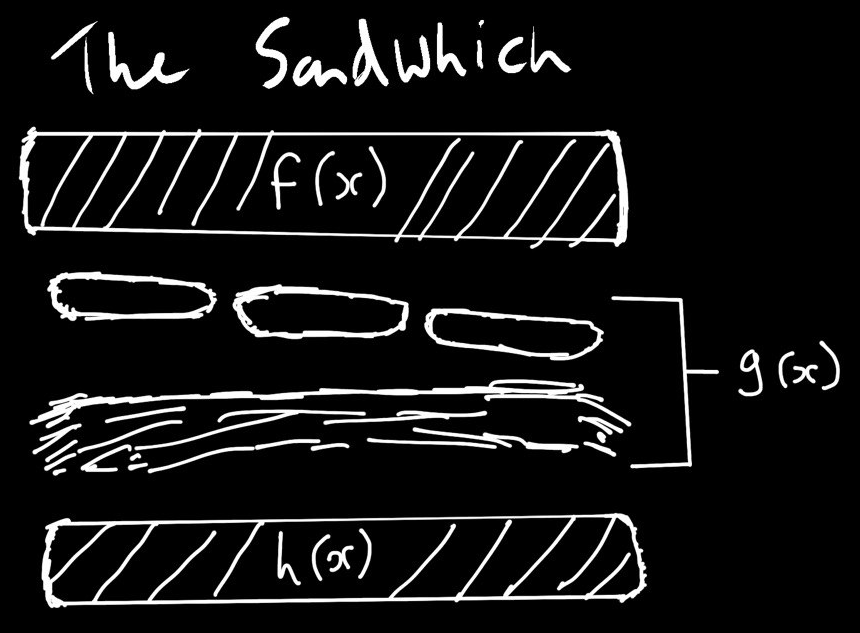

The Squeeze Theorem & the Precise Definition of a Limit
// THE SQUEEZE THEOREM
Suppose \(f, g, h\) are defined close to, but not necessarily at, \(a\). Suppose also that: \[ f(x) \le g(x) \le h(x) \] for \(x\) close to, but not necessarily equal to, \(a\). Suppose that: \[ \lim_{x \to a} f(x) = L = \lim_{x \to a} h(x) \] Then \[ \lim_{x \to a} g(x) = L \text{ also.} \]

// Example 4.20
Define \(g\) by \(g(x) = x^2 \sin\left(\frac{1}{x}\right)\). Its domain is \(\mathbb{R} \setminus \{0\}\). We want to compute \(\lim_{x \to 0} g(x)\). We'll use the Squeeze Theorem. Define \(f\) and \(h\) by \(f(x) = -x^2\), \(h(x) = x^2\). Since \(x^2 \ge 0\) and since \(-1 \le \sin\left(\frac{1}{x}\right) \le 1\), we have \[ -x^2 \le x^2 \sin\left(\frac{1}{x}\right) \le x^2 \] \[ f(x) \le g(x) \le h(x) \] Now \[ \lim_{x \to 0} f(x) = \lim_{x \to 0} -x^2 = -0^2 = 0 \] and \[ \lim_{x \to 0} h(x) = \lim_{x \to 0} x^2 = 0^2 = 0 \] So \[ \lim_{x \to 0} x^2 \sin\left(\frac{1}{x}\right) = 0 \text{ as well.} \]